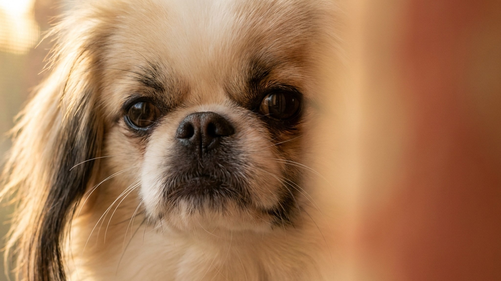

Японский хин умывается лапой, забирается на спинку дивана и обходит лужу стороной. Поведение, которое чаще ждёшь от кошки. Порода провела несколько веков при японском императорском дворе, и это сформировало характер: спокойный, деликатный, с высокими запросами к комфорту. Плоская мордочка требует особого внимания летом, а шелковистая шерсть проще в уходе, чем выглядит. Всё по порядку.
🐾 У вас японский хин?
AnimaLife соберёт уход под породу: к каким болезням есть склонность, что проверять по возрасту, чем кормить и когда пора к врачу. Бесплатно, прямо в мессенджере.
Собрать план ухода → Собрать в MAX →
У вас iPhone? AnimaLife есть в App Store
Японский хин держится с достоинством, а не с назойливостью. Он не скулит у двери и не прыгает на гостей. Привязывается к хозяину крепко, но без истерик при расставании, если собака социализирована с щенячьего возраста. С чужими людьми держится осторожно, без агрессии.
Кошачьи повадки у породы задокументированы заводчиками: хин умывается, избегает грязи, любит высокие места. На подоконнике или спинке кресла его встретишь чаще, чем на полу. Характер ровный, без взрывных перепадов. Лает редко, голос подаёт по делу. Хорошо подходит для квартиры, в том числе с соседями за стеной.
С детьми стоит учитывать размер: вес 3–7 кг и хрупкое телосложение делают породу уязвимой для грубой игры. Хин хорошо себя чувствует рядом с детьми школьного возраста, которые понимают границы. С малышами до 5 лет контакт лучше контролировать.
Шерсть у японского хина длинная, шелковистая, без подшёрстка. Колтунов образуется меньше, чем у пород с густым подшёрстком, но расчёсывать нужно 2–3 раза в неделю. Во время сезонной линьки расчёсывают ежедневно. Купают раз в 3–4 недели. Стрижка не нужна: стандарт предполагает естественную длину.
Глаза требуют отдельного внимания. У японского хина крупные выпуклые глаза, и область вокруг них склонна к слезоточивости. Протирайте её мягкой влажной салфеткой каждый день. Если выделения обильные, изменили цвет или запах, покажите собаку ветеринару.
Японский хин относится к брахицефальным породам: приплюснутая мордочка сокращает длину дыхательных путей. Это не болезнь, но это ограничение, о котором владелец должен знать.
В жару порода перегревается быстро. При температуре выше 25 градусов прогулки лучше переносить на раннее утро и вечер. На улице в жаркий день хину нужна тень и вода. Если хин тяжело дышит, стал вялым, язык потемнел до тёмно-красного, уберите его в прохладу и сразу свяжитесь с ветеринаром.
Физическая нагрузка нужна умеренная. Две прогулки в день по 20–30 минут в спокойном темпе закрывают потребность в движении. Пробежки и активные игры в духоте японскому хину не подходят. Любые вопросы по дыханию и переносимости нагрузки обсудите с ветеринаром.
Японский хин хорошо подходит тому, кто ценит тихую собаку-компаньона. Порода не требует интенсивных нагрузок, не лает без повода и комфортно живёт в квартире. Её выбирают пожилые владельцы, люди с умеренной активностью, семьи без маленьких детей.
Хозяин должен регулярно протирать глаза собаке и следить за ней в жару. Несложно, но важно делать это без пропусков. Если такой ритм подходит и вы ищете спокойного компаньона с характером, японский хин впишется в вашу жизнь хорошо.
🐾 Ваш питомец — японский хин?
Заведите профиль в AnimaLife: приложение запомнит породу, возраст и вес и будет подсказывать по уходу именно для неё. Вопросы AI-ветеринару — круглосуточно и бесплатно.
Завести профиль → Завести в MAX →
У вас iPhone? AnimaLife есть в App Store
🐾 Понравился разбор?
Подпишитесь на канал — каждый день разбираем по одному тревожному симптому у кошек и собак: что в пределах нормы, а когда пора к врачу. Подпишитесь, чтобы не пропустить разбор, который может спасти здоровье вашего питомца.
Материал носит информационный характер и не заменяет очную консультацию ветеринара.